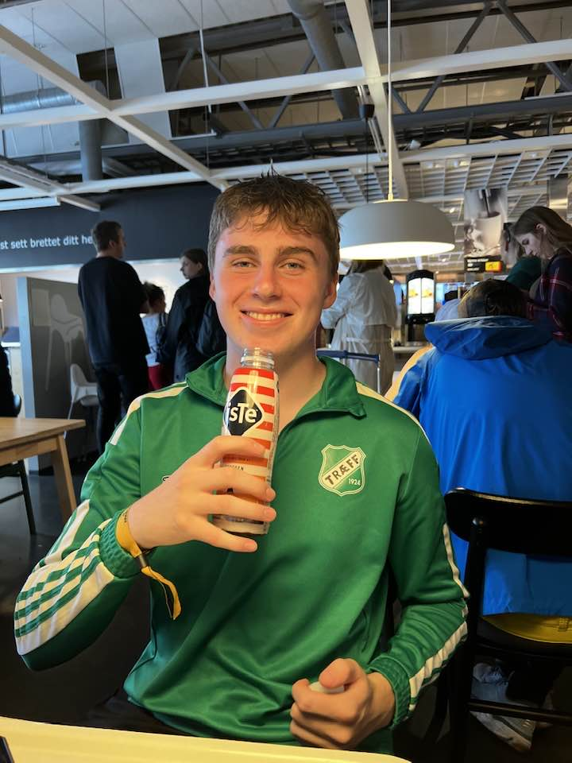

"Maggy" klubbløs!?
Maggy, Magnus Bårdsnes Gurskevik, den unge fotballtalenten med en imponerende sesong med Træff, har virkelig satt seg selv på kartet med sitt imponerende spill. Hans ferdigheter har fanget oppmerksomheten til fotballverdenen, og det spekuleres nå om han kan bli den neste A-lagsspilleren i klubben.
Maggy's reise til suksess begynte i Træffs ungdomsakademi, der hans lidenskap og dedikasjon for spillet skilte seg ut. Han har vist seg som en allsidig spiller, i stand til å utføre på forskjellige posisjoner på banen. Hans hurtighet, ballkontroll og evne til å lese spillet har gjort ham til en verdifull ressurs for Træff gjennom hele sesongen.
Nå, som han er kontraktløs etter en spektakulær sesong, er det en spenning og usikkerhet rundt hva fremtiden vil bringe for Maggy. Klubber fra inn- og utland følger nøye med på situasjonen hans, inkludert Molde, som angivelig også har vist interesse for å hente ham til sin tropp. Agentene hans forhandler sikkert om tilbud fra flere interesserte parter.
Det er ingen tvil om at Maggy har potensial til å nå langt innen fotballverdenen. Spørsmålet er om han vil forbli trofast mot Træff og fortsette å bidra til klubbens suksess, eller om han vil ta det neste steget og prøve lykken i en større liga, som for eksempel Molde.
Uansett hva som skjer, er det tydelig at Maggy er en spiller som kommer til å bli omtalt i mange år fremover. Han har allerede bevist at han har det som kreves for å nå toppen, og hans fremtid i fotballverdenen ser lys ut. Træff-fansen håper selvfølgelig at han velger å bli hos klubben, mens Molde og andre klubber ser ut til å være ivrige etter å sikre seg hans tjenester. Det blir spennende å se hvordan denne historien utvikler seg. 